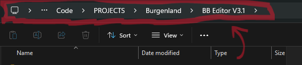
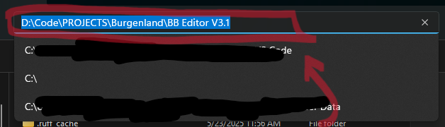

Installation for Windows¶
Note
"Repo" is short for a code repository. In this case, "repo" references a GitHub repository.
Note
You will need a free, active GitHub account with access to the private BB repo. Sign up on GitHub.com.
1. Clone or Download Code from GitHub¶
- browse to the private BB repo (BB-Editor-V3-main) on GitHub
- click the green
Codebutton - click
Download ZIP - unzip the code to a location of your choice on your local machine
Warning
Do NOT unzip to Windows protected folders such as Documents, Favorites, Desktop, etc
2. Install uv (Package Manager for Python)¶
- open Powershell by right-clicking on Windows Start button then click Powershell or Terminal
- copy/paste the code below into Powershell and press Enter
- after uv installation has finished, close powershell
3. Install Git¶
Install Git with PowerShell script (preferred, automatic)¶
- using file explorer, navigate to the
BB-Editor-V3-mainfolder that you unzipped onto your local machine - in the BB-Editor-V3-main folder, right-click on
install-git.ps1and select"Run with PowerShell"
Warning
If your terminal opens and instantly closes WITHOUT your input, try one of the other Git install methods below.
- after Git installation is complete, you can close PowerShell/Terminal.
Optional: Install Git using the Terminal to manually run the PowerShell script¶
-
find the full path to your
BB-Editor-V3-mainfolder- using file explorer, navigate to your BB-Editor-V3-main folder
- click the file explorer URL bar, copy the full path to your BB-Editor-V3-main folder


-
open PowerShell by right-clicking on the Windows Start button then click PowerShell or Terminal
-
paste the full path to your BB-Editor-V3-main folder into PowerShell
- type cd followed by a space
- paste the full path to your bb editor folder
- put quote marks at start of full path and end of full path and press Enter
- see example below
-
copy/paste the powershell command below into the terminal and press Enter
Optional: Install Git manually¶
- download Git installer from Git Downloads
- use default options during installation
4. Run BB Editor V3¶
- navigate to
BB-Editor-V3-main/App/folder on local machine - Double-Click
Run BBeditor.bat
Note
On first run, uv will install any needed packages
Note
When you attempt your first Pull in the GitHub Pull tab, you should get a yellow box warning about local changes and a green box for success. This is normal.